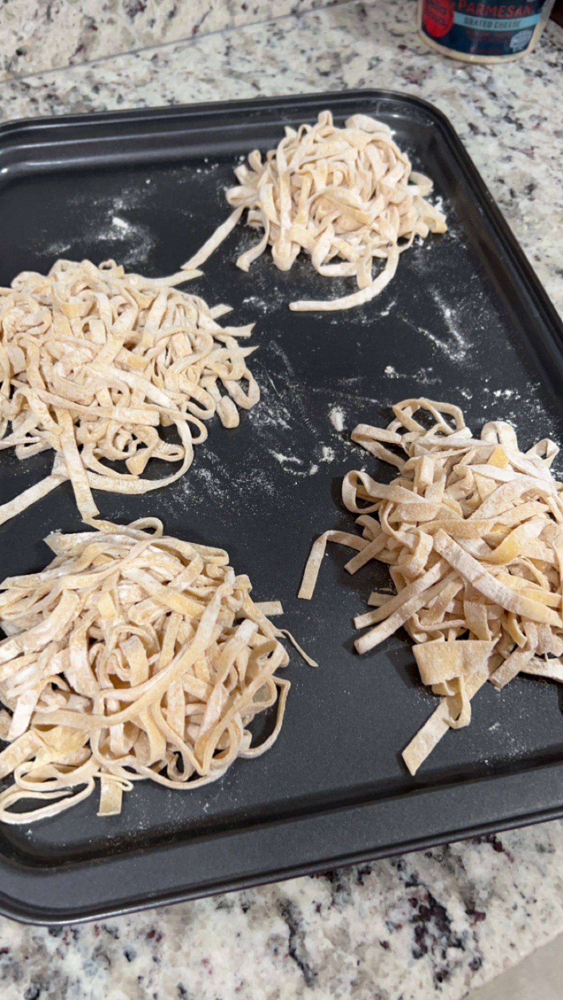
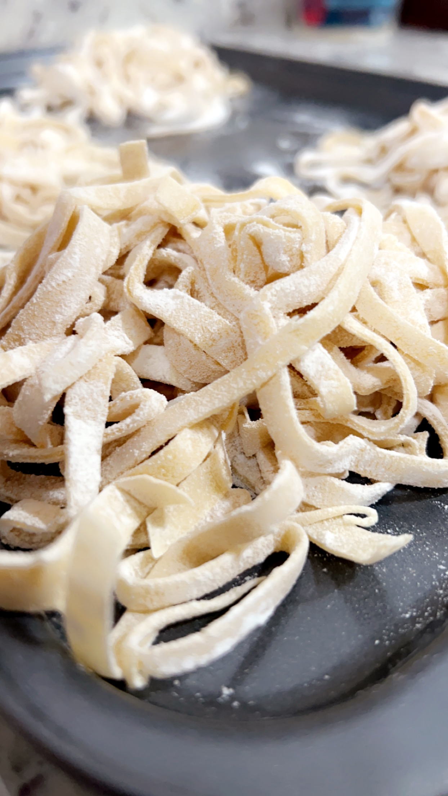

Fresh Pasta
This is a recipe that has intimiated me for the longest time. The
thought of making fresh pasta always seemed like an impossible
task, until I finally attempted to try. The picture above is my
second attempt and boy do I have some tips for you.
My first time making pasta, I forgot the Olive Oil! I might as
well have trashed that dough. The dough came out super dry and I had
to roll the dough out by hand using a plastic cup. The noodles that dough
produced were extremely thick and after cooking them for about 5 minutes
or so they were still raw in the middle.
Round two went by a lot smoother! I remembered the Olive Oil, the
consistency was right and I had a rolling pin. The noodles cooked all
the way through, but some were thicker than others. And the rolling pin
worked for the most part but the dough kept folding over itself and
created this crease that weakened the structure of the noodle. I'm not sure
how to correct the fold over issue, adding more flour so the dough doesn't
stick to the rolling pin seemed to help. Also, go slow with the rolling pin.

Ingredients:
- 2 cups all-purpose flour - spooned & leveled
- 3 large eggs
- 1/2 teaspoon kosher salt
- 1/2 tablespoon extra-virgin olive oil
Equipment:
- Rolling Pin
- Using a pasta machine or stand mixer with the pasta
attachments is recommended, unless you want a work out.
- Lidded bowl or plastic wrap
- Large Pot
- Large baking sheet
- Colander
- Knife
- Fork
Steps:
- Dump the flour onto a clean counter and create a liitle
bowl right in the center of the pile using the fork.
- Once your bowl is created add the eggs, olive oil and salt, then use the fork to
gently beat the eggs.
- Keeping the flour walls intact as best as you can, slowly start to
incorporate the flour into the eggs.
- Once half the flour has been incorporated the eggs should be thick enough
for you to start using your hands. This will be messy. Continue to incorporate
the flour until the mixture comes together to form a shaggy dough ball.
- Knead your dough ball for 8-10 minutes, it might feel dry at first but it
should become cohesive and smooth. If it feels to dry, dip your hand in some water
and continue to knead. If the dough is to moist and sticky, sprinkle a little
flour onto the dough ball and continue to knead. Once desired consistency is
achieved, wrap dough ball in plastic wrap and let rest at room temp for 30 mins.
- Grab the baking sheet and dust with flour.
- Once dough is rested, cut into 4 pieces.
- Gently flatten out one piece of dough with your hand and slowly start
to roll the dough out with the rolling pin. If you are using a pasta machine,
run the dough through setting 1 three times. If you are using a rolling pin, roll
the dough out to a foot long sheet. When rolling, it is best to dust your work surface
and equipment with flour so the dough doesn't stick. But you do not want to over flour
as this will cause the dough to not stick to itself and when you fold the dough
it won't come together.
- Fold the sheet in on itself in thirds and then rotate so you have a
rectangle to work with.
- Roll with pin until sheet is translucent. If using a machine, pass the
sheet three times on setting 2 and 3, then once each on 4, 5 and 6.
- Sprinkle whole sheet with flour and fold in half, flour again, then fold
in half. And lastly, flour the sheet again and fold it in half resulting in a small
rectangle of dough. Place on baking sheet.
- Repeat steps 8-11 for remaining dough pieces.
- After all sheets have been rolled out, grab your knife and gently cut
the rolled sheets of dough into your desired pasta width. You can also use any
pasta cutter attachment. Once pasta has been cut, dust with flour and fold into
little nests ready for cooking or storing.
- Cook in boiling water for 2-3 minutes.